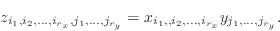
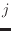
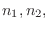

Computes the nearest neighbour difference along a given direction. The
optional argument () can be used to specify the number of
neighbours to skip in computing the differences. The length of the
dimension being differenced is reduced by in the result.
It comes in two different forms which differ only in how the resultant
x-vector is calculated.
, and
, where  refers to the x-vector index.